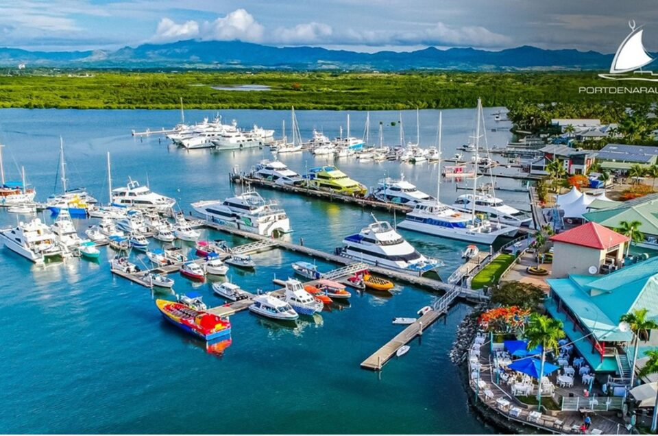
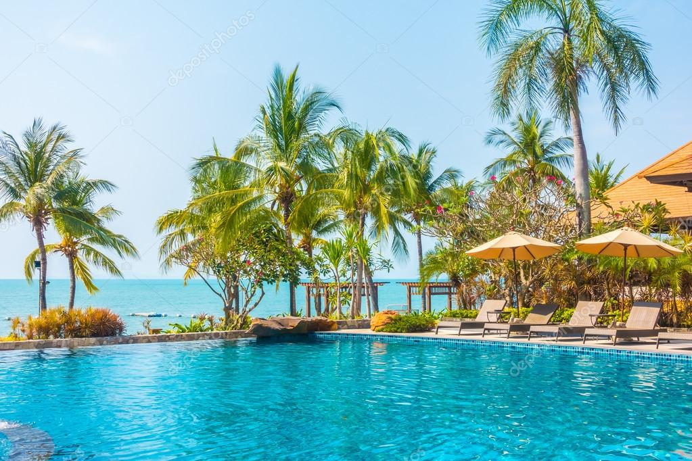

Port Denarau: Hotels, Resorts, and Island Adventures
Port Denarau is a popular tourist destination near Nadi. It is known for its marina, restaurants, shopping areas, and access to boat trips around Fiji's islands. Denarau Island is also home to several luxury hotels and resorts where visitors can relax, swim, eat, and enjoy their holidays.

Things to Do
- Walk around the marina and enjoy the ocean views.
- Visit restaurants and shops.
- Take a boat trip to nearby islands.
- Relax at a hotel or resort on Denarau Island.
